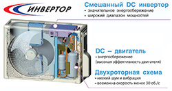
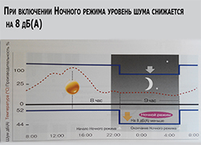
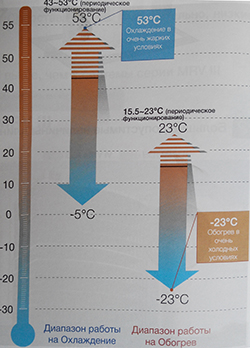
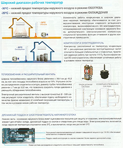
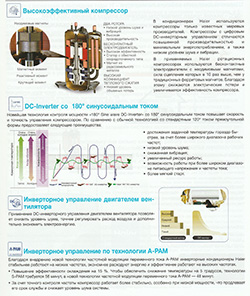

Плюсы и минусы инверторных кондиционеров
В последние годы всё большую популярность завоёвывают инверторные кондиционеры. Они снабжены особым устройством – инвертором, позволяющим регулировать частоту работы компрессора. Такой кондиционер может регулировать мощность работы, но что это значит на практике? Какие же основные плюсы и минусы кондиционеров этого типа?

Инверторный кондиционер работает гораздо тише обычного. Так как кондиционеры такого типа практически никогда не работают на полной мощности, уровень шумности достигает 15 дБ, что соответствует по уровню громкости шелесту листвы или шёпоту. Для примера, максимально допустимый уровень шумности для жилых помещений в ночное время составляет 25-30 дБ. Минимальный уровень шумности неинверторных кондиционеров составляет 20-25 дБ.

Инверторный кондиционер работает не только на охлаждение, но и на нагрев воздуха. Большинство инверторных кондиционеров могут работать при низких температурах – до -15С, а некоторые и до -43С (при использовании специальных зимних комплектов). Таким образом, с помощью одного кондиционера можно создать комфорт не только летом, но и в переходный период, а в наших краях и круглогодично. Неинверторные кондиционеры ограничены внешней температурой -5 градусов.
Инверторные кондиционеры экономичнее в использовании электроэнергии. За счёт цифрового регулирования частоты работы компрессора, такой кондиционер потребляет меньше энергии, чем обычный. Однако, он чувствителен к перепадам напряжения – при установке в зонах нестабильного напряжения его следует подключать через стабилизатор напряжения.

Ещё одним бонусом при покупке инверторного кондиционера будут низкие пусковые токи. Любая сложная техника при запуске потребляет больше энергии, чем при дальнейшей работе. Это кратковременное явление, но оно изрядно нагружает сеть, вследствие чего может произойти скачок напряжения, очень опасный для домашней техники – ПК, стиральных и посудомоечных машин, микроволновых печей и прочих бытовых приборов. Инверторные кондиционеры отличает низкий уровень потребления энергии при запуске. Мощность в таких кондиционерах нарастает постепенно, не перегружая сеть.

Ещё одна отличительная особенность инвертора в наличии датчика внешней температуры. Если наружная температура отличается от заданной не более чем на 2 градуса, то компрессор останавливается и кондиционер переходит в режим ожидания, так как комфортные условия уже обеспечены. В следующий раз кондиционер запустится в случае роста (или падения) температуры более чем на 2 градуса. Таким образом, в отсутствие необходимости кондиционер не работает, и единственное потребление энергии идёт на пару датчиков – а это гораздо меньше, чем энергопотребление обычной лампочки.

{kind=link}
{kind=link}
{kind=link}
{kind=link}